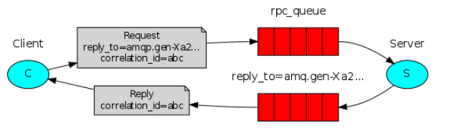

<!DOCTYPE html>


<html lang="zh-CN">
  

    <head>
      <meta charset="utf-8" />
        
      <meta
        name="viewport"
        content="width=device-width, initial-scale=1, maximum-scale=1"
      />
      <title>RabbitMQ初感-实操 |  时光荏苒</title>
  <meta name="generator" content="hexo-theme-ayer">
      
      <link rel="shortcut icon" href="/favicon.ico" />
       
<link rel="stylesheet" href="/dist/main.css">

      <link
        rel="stylesheet"
        href="https://cdn.jsdelivr.net/gh/Shen-Yu/cdn/css/remixicon.min.css"
      />
      
<link rel="stylesheet" href="/css/custom.css">
 
      <script src="https://cdn.jsdelivr.net/npm/pace-js@1.0.2/pace.min.js"></script>
       
 

      <link
        rel="stylesheet"
        href="https://cdn.jsdelivr.net/npm/@sweetalert2/theme-bulma@5.0.1/bulma.min.css"
      />
      <script src="https://cdn.jsdelivr.net/npm/sweetalert2@11.0.19/dist/sweetalert2.min.js"></script>

      <!-- mermaid -->
      
      <style>
        .swal2-styled.swal2-confirm {
          font-size: 1.6rem;
        }
      </style>
    <link rel="alternate" href="/atom.xml" title="时光荏苒" type="application/atom+xml">
</head>
  </html>
</html>


<body>
  <div id="app">
    
      
      <canvas width="1777" height="841"
        style="position: fixed; left: 0px; top: 0px; z-index: 99999; pointer-events: none;"></canvas>
      
    <main class="content on">
      <section class="outer">
  <article
  id="post-RabbitMQ初感-2"
  class="article article-type-post"
  itemscope
  itemprop="blogPost"
  data-scroll-reveal
>
  <div class="article-inner">
    
    <header class="article-header">
       
<h1 class="article-title sea-center" style="border-left:0" itemprop="name">
  RabbitMQ初感-实操
</h1>
 

      
    </header>
     
    <div class="article-meta">
      <a href="/2021/09/10/RabbitMQ%E5%88%9D%E6%84%9F-2/" class="article-date">
  <time datetime="2021-09-10T02:07:25.000Z" itemprop="datePublished">2021-09-10</time>
</a> 
  <div class="article-category">
    <a class="article-category-link" href="/categories/%E6%8A%80%E6%9C%AF/">技术</a> / <a class="article-category-link" href="/categories/%E6%8A%80%E6%9C%AF/RabbitMQ/">RabbitMQ</a>
  </div>
  
<div class="word_count">
    <span class="post-time">
        <span class="post-meta-item-icon">
            <i class="ri-quill-pen-line"></i>
            <span class="post-meta-item-text"> 字数统计:</span>
            <span class="post-count">4.4k</span>
        </span>
    </span>

    <span class="post-time">
        &nbsp; | &nbsp;
        <span class="post-meta-item-icon">
            <i class="ri-book-open-line"></i>
            <span class="post-meta-item-text"> 阅读时长≈</span>
            <span class="post-count">18 分钟</span>
        </span>
    </span>
</div>
 
    </div>
      
    <div class="tocbot"></div>


  
    <div class="article-entry" itemprop="articleBody">
       
  <h2 id="六种消息模型"><a href="#六种消息模型" class="headerlink" title="六种消息模型"></a>六种消息模型</h2><h3 id="基本消息模型-点对点模式"><a href="#基本消息模型-点对点模式" class="headerlink" title="基本消息模型 (点对点模式)"></a>基本消息模型 (点对点模式)</h3><h4 id="一对一-多对一"><a href="#一对一-多对一" class="headerlink" title="一对一 (多对一)"></a>一对一 (多对一)</h4><p></p>
<blockquote>
<p>P:生产者<br>C:消费者<br>Queue:消息队列</p>
</blockquote>
<h5 id="依赖"><a href="#依赖" class="headerlink" title="依赖"></a>依赖</h5><p>新建一个maven工程，添加依赖</p>
<figure class="highlight plaintext"><table><tr><td class="gutter"><pre><span class="line">1</span><br><span class="line">2</span><br><span class="line">3</span><br><span class="line">4</span><br><span class="line">5</span><br></pre></td><td class="code"><pre><span class="line">&lt;dependency&gt;</span><br><span class="line">            &lt;groupId&gt;com.rabbitmq&lt;/groupId&gt;</span><br><span class="line">            &lt;artifactId&gt;amqp-client&lt;/artifactId&gt;</span><br><span class="line">            &lt;version&gt;5.7.1&lt;/version&gt;</span><br><span class="line">&lt;/dependency&gt;</span><br></pre></td></tr></table></figure>
<h5 id="连接工具类"><a href="#连接工具类" class="headerlink" title="连接工具类"></a>连接工具类</h5><figure class="highlight java"><table><tr><td class="gutter"><pre><span class="line">1</span><br><span class="line">2</span><br><span class="line">3</span><br><span class="line">4</span><br><span class="line">5</span><br><span class="line">6</span><br><span class="line">7</span><br><span class="line">8</span><br><span class="line">9</span><br><span class="line">10</span><br><span class="line">11</span><br><span class="line">12</span><br><span class="line">13</span><br><span class="line">14</span><br><span class="line">15</span><br><span class="line">16</span><br><span class="line">17</span><br></pre></td><td class="code"><pre><span class="line"><span class="keyword">public</span> <span class="class"><span class="keyword">class</span> <span class="title">ConnectionUtil</span> </span>&#123;</span><br><span class="line">    <span class="function"><span class="keyword">public</span> <span class="keyword">static</span> Connection <span class="title">getConnection</span><span class="params">()</span> <span class="keyword">throws</span> Exception </span>&#123;</span><br><span class="line">        <span class="comment">//定义连接工厂</span></span><br><span class="line">        ConnectionFactory factory = <span class="keyword">new</span> ConnectionFactory();</span><br><span class="line">        <span class="comment">//设置服务地址</span></span><br><span class="line">        factory.setHost(<span class="string">&quot;x.x.x.x&quot;</span>);</span><br><span class="line">        <span class="comment">//端口</span></span><br><span class="line">        factory.setPort(xxxx);</span><br><span class="line">        <span class="comment">//设置账号信息，用户名、密码、vhost</span></span><br><span class="line">        factory.setVirtualHost(<span class="string">&quot;my_vhost&quot;</span>);<span class="comment">//设置虚拟机，一个mq服务可以设置多个虚拟机，每个虚拟机就相当于一个独立的mq</span></span><br><span class="line">        factory.setUsername(<span class="string">&quot;admin&quot;</span>);</span><br><span class="line">        factory.setPassword(<span class="string">&quot;123456&quot;</span>);</span><br><span class="line">        <span class="comment">// 通过工厂获取连接</span></span><br><span class="line">        Connection connection = factory.newConnection();</span><br><span class="line">        <span class="keyword">return</span> connection;</span><br><span class="line">    &#125;</span><br><span class="line">&#125;</span><br></pre></td></tr></table></figure>
<h5 id="生产者"><a href="#生产者" class="headerlink" title="生产者"></a>生产者</h5><figure class="highlight java"><table><tr><td class="gutter"><pre><span class="line">1</span><br><span class="line">2</span><br><span class="line">3</span><br><span class="line">4</span><br><span class="line">5</span><br><span class="line">6</span><br><span class="line">7</span><br><span class="line">8</span><br><span class="line">9</span><br><span class="line">10</span><br><span class="line">11</span><br><span class="line">12</span><br><span class="line">13</span><br><span class="line">14</span><br><span class="line">15</span><br><span class="line">16</span><br><span class="line">17</span><br><span class="line">18</span><br><span class="line">19</span><br><span class="line">20</span><br><span class="line">21</span><br><span class="line">22</span><br><span class="line">23</span><br><span class="line">24</span><br><span class="line">25</span><br><span class="line">26</span><br><span class="line">27</span><br><span class="line">28</span><br><span class="line">29</span><br><span class="line">30</span><br><span class="line">31</span><br><span class="line">32</span><br><span class="line">33</span><br><span class="line">34</span><br><span class="line">35</span><br><span class="line">36</span><br><span class="line">37</span><br></pre></td><td class="code"><pre><span class="line"><span class="keyword">public</span> <span class="class"><span class="keyword">class</span> <span class="title">Send</span> </span>&#123;</span><br><span class="line">    <span class="keyword">private</span> <span class="keyword">final</span> <span class="keyword">static</span> String QUEUE_NAME = <span class="string">&quot;simple_queue&quot;</span>;</span><br><span class="line">    <span class="function"><span class="keyword">public</span> <span class="keyword">static</span> <span class="keyword">void</span> <span class="title">main</span><span class="params">(String[] argv)</span> <span class="keyword">throws</span> Exception </span>&#123;</span><br><span class="line">        <span class="comment">// 1、获取到连接</span></span><br><span class="line">        Connection connection = ConnectionUtil.getConnection();</span><br><span class="line">        <span class="comment">// 2、从连接中创建通道，使用通道才能完成消息相关的操作</span></span><br><span class="line">        Channel channel = connection.createChannel();</span><br><span class="line">        <span class="comment">// 3、声明（创建）队列</span></span><br><span class="line">        <span class="comment">//参数：String queue, boolean durable, boolean exclusive, boolean autoDelete, Map&lt;String, Object&gt; arguments</span></span><br><span class="line">        <span class="comment">/**</span></span><br><span class="line"><span class="comment">         * 参数明细</span></span><br><span class="line"><span class="comment">         * 1、queue 队列名称</span></span><br><span class="line"><span class="comment">         * 2、durable 是否持久化，如果持久化，mq重启后队列还在</span></span><br><span class="line"><span class="comment">         * 3、exclusive 是否独占连接，队列只允许在该连接中访问，如果connection连接关闭队列则自动删除,如果将此参数设置true可用于临时队列的创建</span></span><br><span class="line"><span class="comment">         * 4、autoDelete 自动删除，队列不再使用时是否自动删除此队列，如果将此参数和exclusive参数设置为true就可以实现临时队列（队列不用了就自动删除）</span></span><br><span class="line"><span class="comment">         * 5、arguments 参数，可以设置一个队列的扩展参数，比如：可设置存活时间</span></span><br><span class="line"><span class="comment">         */</span></span><br><span class="line">        channel.queueDeclare(QUEUE_NAME, <span class="keyword">false</span>, <span class="keyword">false</span>, <span class="keyword">false</span>, <span class="keyword">null</span>);</span><br><span class="line">        <span class="comment">// 4、消息内容</span></span><br><span class="line">        String message = <span class="string">&quot;Hello World!&quot;</span>;</span><br><span class="line">        <span class="comment">// 向指定的队列中发送消息</span></span><br><span class="line">        <span class="comment">//参数：String exchange, String routingKey, BasicProperties props, byte[] body</span></span><br><span class="line">        <span class="comment">/**</span></span><br><span class="line"><span class="comment">         * 参数明细：</span></span><br><span class="line"><span class="comment">         * 1、exchange，交换机，如果不指定将使用mq的默认交换机（设置为&quot;&quot;）</span></span><br><span class="line"><span class="comment">         * 2、routingKey，路由key，交换机根据路由key来将消息转发到指定的队列，如果使用默认交换机，routingKey设置为队列的名称</span></span><br><span class="line"><span class="comment">         * 3、props，消息的属性</span></span><br><span class="line"><span class="comment">         * 4、body，消息内容</span></span><br><span class="line"><span class="comment">         */</span></span><br><span class="line">        channel.basicPublish(<span class="string">&quot;&quot;</span>, QUEUE_NAME, <span class="keyword">null</span>, message.getBytes());</span><br><span class="line">        System.out.println(<span class="string">&quot; [x] Sent &#x27;&quot;</span> + message + <span class="string">&quot;&#x27;&quot;</span>);</span><br><span class="line">        </span><br><span class="line">        <span class="comment">//关闭通道和连接(资源关闭最好用try-catch-finally语句处理)</span></span><br><span class="line">        channel.close();</span><br><span class="line">        connection.close();</span><br><span class="line">    &#125;</span><br><span class="line">&#125;</span><br></pre></td></tr></table></figure>
<p>在对应的web管理网站</p>
<h5 id="消费者"><a href="#消费者" class="headerlink" title="消费者"></a>消费者</h5><figure class="highlight java"><table><tr><td class="gutter"><pre><span class="line">1</span><br><span class="line">2</span><br><span class="line">3</span><br><span class="line">4</span><br><span class="line">5</span><br><span class="line">6</span><br><span class="line">7</span><br><span class="line">8</span><br><span class="line">9</span><br><span class="line">10</span><br><span class="line">11</span><br><span class="line">12</span><br><span class="line">13</span><br><span class="line">14</span><br><span class="line">15</span><br><span class="line">16</span><br><span class="line">17</span><br><span class="line">18</span><br><span class="line">19</span><br><span class="line">20</span><br><span class="line">21</span><br><span class="line">22</span><br><span class="line">23</span><br><span class="line">24</span><br><span class="line">25</span><br><span class="line">26</span><br><span class="line">27</span><br><span class="line">28</span><br><span class="line">29</span><br><span class="line">30</span><br><span class="line">31</span><br><span class="line">32</span><br><span class="line">33</span><br><span class="line">34</span><br><span class="line">35</span><br><span class="line">36</span><br><span class="line">37</span><br><span class="line">38</span><br><span class="line">39</span><br><span class="line">40</span><br><span class="line">41</span><br><span class="line">42</span><br><span class="line">43</span><br><span class="line">44</span><br><span class="line">45</span><br><span class="line">46</span><br><span class="line">47</span><br><span class="line">48</span><br><span class="line">49</span><br><span class="line">50</span><br><span class="line">51</span><br><span class="line">52</span><br><span class="line">53</span><br></pre></td><td class="code"><pre><span class="line"><span class="keyword">public</span> <span class="class"><span class="keyword">class</span> <span class="title">Recv</span> </span>&#123;</span><br><span class="line">    <span class="keyword">private</span> <span class="keyword">final</span> <span class="keyword">static</span> String QUEUE_NAME = <span class="string">&quot;htr_test1&quot;</span>;</span><br><span class="line"></span><br><span class="line">    <span class="function"><span class="keyword">public</span> <span class="keyword">static</span> <span class="keyword">void</span> <span class="title">main</span><span class="params">(String[] argv)</span> <span class="keyword">throws</span> Exception </span>&#123;</span><br><span class="line">        <span class="comment">// 获取到连接</span></span><br><span class="line">        Connection connection = ConnectionUtil.getConnection();</span><br><span class="line">        <span class="comment">//创建会话通道,生产者和mq服务所有通信都在channel通道中完成</span></span><br><span class="line">        Channel channel = connection.createChannel();</span><br><span class="line">        <span class="comment">// 声明队列</span></span><br><span class="line">        <span class="comment">//参数：String queue, boolean durable, boolean exclusive, boolean autoDelete, Map&lt;String, Object&gt; arguments</span></span><br><span class="line">        <span class="comment">/**</span></span><br><span class="line"><span class="comment">         * 参数明细</span></span><br><span class="line"><span class="comment">         * 1、queue 队列名称</span></span><br><span class="line"><span class="comment">         * 2、durable 是否持久化，如果持久化，mq重启后队列还在</span></span><br><span class="line"><span class="comment">         * 3、exclusive 是否独占连接，队列只允许在该连接中访问，如果connection连接关闭队列则自动删除,如果将此参数设置true可用于临时队列的创建</span></span><br><span class="line"><span class="comment">         * 4、autoDelete 自动删除，队列不再使用时是否自动删除此队列，如果将此参数和exclusive参数设置为true就可以实现临时队列（队列不用了就自动删除）</span></span><br><span class="line"><span class="comment">         * 5、arguments 参数，可以设置一个队列的扩展参数，比如：可设置存活时间</span></span><br><span class="line"><span class="comment">         */</span></span><br><span class="line">        channel.queueDeclare(QUEUE_NAME, <span class="keyword">false</span>, <span class="keyword">false</span>, <span class="keyword">false</span>, <span class="keyword">null</span>);</span><br><span class="line">        <span class="comment">//实现消费方法</span></span><br><span class="line">        DefaultConsumer consumer = <span class="keyword">new</span> DefaultConsumer(channel)&#123;</span><br><span class="line">            <span class="comment">// 获取消息，并且处理，这个方法类似事件监听，如果有消息的时候，会被自动调用</span></span><br><span class="line">            <span class="comment">/**</span></span><br><span class="line"><span class="comment">             * 当接收到消息后此方法将被调用</span></span><br><span class="line"><span class="comment">             * <span class="doctag">@param</span> consumerTag  消费者标签，用来标识消费者的，在监听队列时设置channel.basicConsume</span></span><br><span class="line"><span class="comment">             * <span class="doctag">@param</span> envelope 信封，通过envelope</span></span><br><span class="line"><span class="comment">             * <span class="doctag">@param</span> properties 消息属性</span></span><br><span class="line"><span class="comment">             * <span class="doctag">@param</span> body 消息内容</span></span><br><span class="line"><span class="comment">             * <span class="doctag">@throws</span> IOException</span></span><br><span class="line"><span class="comment">             */</span></span><br><span class="line">            <span class="meta">@Override</span></span><br><span class="line">            <span class="function"><span class="keyword">public</span> <span class="keyword">void</span> <span class="title">handleDelivery</span><span class="params">(String consumerTag, Envelope envelope, AMQP.BasicProperties properties, <span class="keyword">byte</span>[] body)</span> <span class="keyword">throws</span> IOException </span>&#123;</span><br><span class="line">                <span class="comment">//交换机</span></span><br><span class="line">                String exchange = envelope.getExchange();</span><br><span class="line">                <span class="comment">//消息id，mq在channel中用来标识消息的id，可用于确认消息已接收</span></span><br><span class="line">                <span class="keyword">long</span> deliveryTag = envelope.getDeliveryTag();</span><br><span class="line">                <span class="comment">// body 即消息体</span></span><br><span class="line">                String msg = <span class="keyword">new</span> String(body,<span class="string">&quot;utf-8&quot;</span>);</span><br><span class="line">                System.out.println(<span class="string">&quot; [x] received : &quot;</span> + msg + <span class="string">&quot;!&quot;</span>);</span><br><span class="line">            &#125;</span><br><span class="line">        &#125;;</span><br><span class="line"></span><br><span class="line">        <span class="comment">// 监听队列，第二个参数：是否自动进行消息确认。</span></span><br><span class="line">        <span class="comment">//参数：String queue, boolean autoAck, Consumer callback</span></span><br><span class="line">        <span class="comment">/**</span></span><br><span class="line"><span class="comment">         * 参数明细：</span></span><br><span class="line"><span class="comment">         * 1、queue 队列名称</span></span><br><span class="line"><span class="comment">         * 2、autoAck 自动回复，当消费者接收到消息后要告诉mq消息已接收，如果将此参数设置为tru表示会自动回复mq，如果设置为false要通过编程实现回复</span></span><br><span class="line"><span class="comment">         * 3、callback，消费方法，当消费者接收到消息要执行的方法</span></span><br><span class="line"><span class="comment">         */</span></span><br><span class="line">        channel.basicConsume(QUEUE_NAME, <span class="keyword">true</span>, consumer);</span><br><span class="line">    &#125;</span><br><span class="line">&#125;</span><br></pre></td></tr></table></figure>
<p>消息被消费掉了</p>
<h4 id="消息确认机制-ACK"><a href="#消息确认机制-ACK" class="headerlink" title="消息确认机制(ACK)"></a>消息确认机制(ACK)</h4><p>消息被消费者接收，队列中的消息就被删除，如果消费者收到消息出现异常没有对消息进行有效的操作呢<br>RabbitMQ有消息确认机制(ACK)，消费者操作之后，回想RabbitMQ回执ACK告知消息被接受，ACK分以下两种</p>
<ul>
<li>自动ACK 消息被接收自动发送ACK (可能收到消息，在处理的过程中异常，然后造成消息丢失)</li>
<li>手动ACK 手动编写代码发送ACK (对消息处理后发送ACK，出现异常时消息在消息队列中存在)<br>使用场景：</li>
<li>如果消息不重要，丢失也没有影响，自动ACK比较方便</li>
<li>如果消息重要，建议手动ACK<br>将自动ACK改为手动ACK，需要修改<code> channel.basicConsume(QUEUE_NAME, false, consumer);</code>第二个参数为false<br>然后在消息处理后加上 <code>channel.basicAck(envelope.getDeliveryTag(), false);</code>进行手动ACK<br>ACK的过程就是告诉消息队列，可以删除消息的过程 ，如果关闭自动ACK且没有手动ACK的话，当关闭消费者的时候，消息队列中的消息将恢复 (没有被消费)<h4 id="一对多-多对多"><a href="#一对多-多对多" class="headerlink" title="一对多 (多对多)"></a>一对多 (多对多)</h4><br>两个消费者同事消费一个队列中的消息，其中消费者1处理比较耗时<h5 id="生产者-1"><a href="#生产者-1" class="headerlink" title="生产者"></a>生产者</h5>生产者发送50条消息<figure class="highlight java"><table><tr><td class="gutter"><pre><span class="line">1</span><br><span class="line">2</span><br><span class="line">3</span><br><span class="line">4</span><br><span class="line">5</span><br><span class="line">6</span><br><span class="line">7</span><br><span class="line">8</span><br><span class="line">9</span><br><span class="line">10</span><br><span class="line">11</span><br><span class="line">12</span><br><span class="line">13</span><br><span class="line">14</span><br><span class="line">15</span><br><span class="line">16</span><br><span class="line">17</span><br><span class="line">18</span><br><span class="line">19</span><br><span class="line">20</span><br><span class="line">21</span><br><span class="line">22</span><br></pre></td><td class="code"><pre><span class="line"><span class="keyword">public</span> <span class="class"><span class="keyword">class</span> <span class="title">Send</span> </span>&#123;</span><br><span class="line">    <span class="keyword">private</span> <span class="keyword">final</span> <span class="keyword">static</span> String QUEUE_NAME = <span class="string">&quot;test_work_queue&quot;</span>;</span><br><span class="line">    <span class="function"><span class="keyword">public</span> <span class="keyword">static</span> <span class="keyword">void</span> <span class="title">main</span><span class="params">(String[] argv)</span> <span class="keyword">throws</span> Exception </span>&#123;</span><br><span class="line">        <span class="comment">// 获取到连接</span></span><br><span class="line">        Connection connection = ConnectionUtil.getConnection();</span><br><span class="line">        <span class="comment">// 获取通道</span></span><br><span class="line">        Channel channel = connection.createChannel();</span><br><span class="line">        <span class="comment">// 声明队列</span></span><br><span class="line">        channel.queueDeclare(QUEUE_NAME, <span class="keyword">false</span>, <span class="keyword">false</span>, <span class="keyword">false</span>, <span class="keyword">null</span>);</span><br><span class="line">        <span class="comment">// 循环发布任务</span></span><br><span class="line">        <span class="keyword">for</span> (<span class="keyword">int</span> i = <span class="number">0</span>; i &lt; <span class="number">50</span>; i++) &#123;</span><br><span class="line">            <span class="comment">// 消息内容</span></span><br><span class="line">            String message = <span class="string">&quot;task .. &quot;</span> + i;</span><br><span class="line">            channel.basicPublish(<span class="string">&quot;&quot;</span>, QUEUE_NAME, <span class="keyword">null</span>, message.getBytes());</span><br><span class="line">            System.out.println(<span class="string">&quot; [x] Sent &#x27;&quot;</span> + message + <span class="string">&quot;&#x27;&quot;</span>);</span><br><span class="line">            Thread.sleep(i * <span class="number">2</span>);</span><br><span class="line">        &#125;</span><br><span class="line">        <span class="comment">// 关闭通道和连接</span></span><br><span class="line">        channel.close();</span><br><span class="line">        connection.close();</span><br><span class="line">    &#125;</span><br><span class="line">&#125;</span><br></pre></td></tr></table></figure>
<h5 id="消费者-1"><a href="#消费者-1" class="headerlink" title="消费者"></a>消费者</h5>消费者1 设置1秒处理一条消息<figure class="highlight java"><table><tr><td class="gutter"><pre><span class="line">1</span><br><span class="line">2</span><br><span class="line">3</span><br><span class="line">4</span><br><span class="line">5</span><br><span class="line">6</span><br><span class="line">7</span><br><span class="line">8</span><br><span class="line">9</span><br><span class="line">10</span><br><span class="line">11</span><br><span class="line">12</span><br><span class="line">13</span><br><span class="line">14</span><br><span class="line">15</span><br><span class="line">16</span><br><span class="line">17</span><br><span class="line">18</span><br><span class="line">19</span><br><span class="line">20</span><br><span class="line">21</span><br><span class="line">22</span><br><span class="line">23</span><br><span class="line">24</span><br><span class="line">25</span><br></pre></td><td class="code"><pre><span class="line"><span class="keyword">public</span> <span class="class"><span class="keyword">class</span> <span class="title">Recv</span> </span>&#123;</span><br><span class="line">    <span class="keyword">private</span> <span class="keyword">final</span> <span class="keyword">static</span> String QUEUE_NAME = <span class="string">&quot;test_work_queue&quot;</span>;</span><br><span class="line">    <span class="function"><span class="keyword">public</span> <span class="keyword">static</span> <span class="keyword">void</span> <span class="title">main</span><span class="params">(String[] argv)</span> <span class="keyword">throws</span> Exception </span>&#123;</span><br><span class="line">        <span class="comment">// 获取到连接</span></span><br><span class="line">        Connection connection = ConnectionUtil.getConnection();</span><br><span class="line">        <span class="comment">//创建会话通道,生产者和mq服务所有通信都在channel通道中完成</span></span><br><span class="line">        Channel channel = connection.createChannel();</span><br><span class="line">        <span class="comment">// 声明队列</span></span><br><span class="line">        channel.queueDeclare(QUEUE_NAME, <span class="keyword">false</span>, <span class="keyword">false</span>, <span class="keyword">false</span>, <span class="keyword">null</span>);</span><br><span class="line">        <span class="comment">//实现消费方法</span></span><br><span class="line">        DefaultConsumer consumer = <span class="keyword">new</span> DefaultConsumer(channel)&#123;</span><br><span class="line">            <span class="comment">// 获取消息，并且处理，这个方法类似事件监听，如果有消息的时候，会被自动调用</span></span><br><span class="line">            <span class="meta">@Override</span></span><br><span class="line">            <span class="function"><span class="keyword">public</span> <span class="keyword">void</span> <span class="title">handleDelivery</span><span class="params">(String consumerTag, Envelope envelope, AMQP.BasicProperties properties, <span class="keyword">byte</span>[] body)</span> <span class="keyword">throws</span> IOException </span>&#123;</span><br><span class="line">                <span class="comment">// body 即消息体</span></span><br><span class="line">                String msg = <span class="keyword">new</span> String(body,<span class="string">&quot;utf-8&quot;</span>);</span><br><span class="line">                System.out.println(<span class="string">&quot; [消费者1] received : &quot;</span> + msg + <span class="string">&quot;!&quot;</span>);</span><br><span class="line">                <span class="comment">//模拟任务耗时1s</span></span><br><span class="line">                <span class="keyword">try</span> &#123; TimeUnit.SECONDS.sleep(<span class="number">1</span>); &#125; <span class="keyword">catch</span> (Exception e) &#123; e.printStackTrace(); &#125;</span><br><span class="line">            &#125;</span><br><span class="line">        &#125;;</span><br><span class="line">        <span class="comment">// 监听队列，第二个参数：是否自动进行消息确认。</span></span><br><span class="line">        channel.basicConsume(QUEUE_NAME, <span class="keyword">true</span>, consumer);</span><br><span class="line">    &#125;</span><br><span class="line">&#125;</span><br></pre></td></tr></table></figure>
消费者2和消费者1代码相同，去掉任务耗时即可<br>任务启动结果如下<br><br>两个消费者各消费了不同的25条消息，但由于消费者1处理事情时间较长，导致任务整体的时间依赖于消费者1的时间，那么怎么对这种情况进行改变呢<br>需要把任务进行按时间消费，消费越快的人，消费的越多<br>在声明队列之后，添加 <code>channel.basicQos(1);</code> 设置prefetchCount = 1,<br>设置的是单个消费者在同一时间段最多处理一个消息，在没有收到该消费者的ACK之前，不会将新的消息分发给他，而会把消息分给不在忙碌的下一个消费者 (自动ACK不生效)<br>再次测试<br></li>
</ul>
<h3 id="发布-订阅模式"><a href="#发布-订阅模式" class="headerlink" title="发布/订阅模式"></a>发布/订阅模式</h3><ol>
<li>一个生产者多个消费者 (一对一无意义)</li>
<li>每个消费者都有一个自己的队列</li>
<li>生产者将信息发送给交换机，转发给队列，实现一个消息被多个消费者消费</li>
<li>队列绑定交换机</li>
</ol>
<p>交换机类型有以下四种： </p>
<ul>
<li>Fanout：广播，将消息交给所有绑定到交换机的队列</li>
<li>Direct：定向，把消息交给符合指定routing key 的队列</li>
<li>Topic：通配符，把消息交给符合routing pattern（路由模式） 的队列</li>
<li>Header：header模式与routing不同的地方在于，header模式取消routingkey，使用header中的 key/value（键值对）匹配队列。<h4 id="fanout"><a href="#fanout" class="headerlink" title="fanout"></a>fanout</h4>交换机类型：Fanout，也称为广播,和RoutingKey,BindingKey无关，消息发送到与交换机绑定的所有队列中<br><h5 id="生产者-2"><a href="#生产者-2" class="headerlink" title="生产者"></a>生产者</h5>和点对点模式不同：</li>
</ul>
<ol>
<li>声明交换机</li>
<li>发送消息到交换机<figure class="highlight java"><table><tr><td class="gutter"><pre><span class="line">1</span><br><span class="line">2</span><br><span class="line">3</span><br><span class="line">4</span><br><span class="line">5</span><br><span class="line">6</span><br><span class="line">7</span><br><span class="line">8</span><br><span class="line">9</span><br><span class="line">10</span><br><span class="line">11</span><br><span class="line">12</span><br><span class="line">13</span><br><span class="line">14</span><br><span class="line">15</span><br><span class="line">16</span><br><span class="line">17</span><br><span class="line">18</span><br><span class="line">19</span><br><span class="line">20</span><br></pre></td><td class="code"><pre><span class="line"><span class="keyword">public</span> <span class="class"><span class="keyword">class</span> <span class="title">Send</span> </span>&#123;</span><br><span class="line">    <span class="keyword">private</span> <span class="keyword">final</span> <span class="keyword">static</span> String EXCHANGE_NAME = <span class="string">&quot;test_fanout_exchange&quot;</span>;</span><br><span class="line">    <span class="function"><span class="keyword">public</span> <span class="keyword">static</span> <span class="keyword">void</span> <span class="title">main</span><span class="params">(String[] argv)</span> <span class="keyword">throws</span> Exception </span>&#123;</span><br><span class="line">        <span class="comment">// 获取到连接</span></span><br><span class="line">        Connection connection = ConnectionUtil.getConnection();</span><br><span class="line">        <span class="comment">// 获取通道</span></span><br><span class="line">        Channel channel = connection.createChannel();</span><br><span class="line">        <span class="comment">// 声明exchange，指定类型为fanout</span></span><br><span class="line">        channel.exchangeDeclare(EXCHANGE_NAME, <span class="string">&quot;fanout&quot;</span>);</span><br><span class="line">        </span><br><span class="line">        <span class="comment">// 消息内容</span></span><br><span class="line">        String message = <span class="string">&quot;发送消息！！&quot;</span>;</span><br><span class="line">        <span class="comment">// 发布消息到Exchange</span></span><br><span class="line">        channel.basicPublish(EXCHANGE_NAME, <span class="string">&quot;&quot;</span>, <span class="keyword">null</span>, message.getBytes());</span><br><span class="line">        System.out.println(<span class="string">&quot; [生产者] Sent &#x27;&quot;</span> + message + <span class="string">&quot;&#x27;&quot;</span>);</span><br><span class="line"> </span><br><span class="line">        channel.close();</span><br><span class="line">        connection.close();</span><br><span class="line">    &#125;</span><br><span class="line">&#125;</span><br></pre></td></tr></table></figure>
<h5 id="消费者1"><a href="#消费者1" class="headerlink" title="消费者1"></a>消费者1</h5>消费者1在收到消息之后会执行短信通知<figure class="highlight java"><table><tr><td class="gutter"><pre><span class="line">1</span><br><span class="line">2</span><br><span class="line">3</span><br><span class="line">4</span><br><span class="line">5</span><br><span class="line">6</span><br><span class="line">7</span><br><span class="line">8</span><br><span class="line">9</span><br><span class="line">10</span><br><span class="line">11</span><br><span class="line">12</span><br><span class="line">13</span><br><span class="line">14</span><br><span class="line">15</span><br><span class="line">16</span><br><span class="line">17</span><br><span class="line">18</span><br><span class="line">19</span><br><span class="line">20</span><br><span class="line">21</span><br><span class="line">22</span><br><span class="line">23</span><br><span class="line">24</span><br><span class="line">25</span><br><span class="line">26</span><br><span class="line">27</span><br><span class="line">28</span><br><span class="line">29</span><br><span class="line">30</span><br><span class="line">31</span><br></pre></td><td class="code"><pre><span class="line"><span class="keyword">public</span> <span class="class"><span class="keyword">class</span> <span class="title">Recv</span> </span>&#123;</span><br><span class="line">    <span class="keyword">private</span> <span class="keyword">final</span> <span class="keyword">static</span> String QUEUE_NAME = <span class="string">&quot;fanout_exchange_queue_sms&quot;</span>;<span class="comment">//短信队列</span></span><br><span class="line"> </span><br><span class="line">    <span class="keyword">private</span> <span class="keyword">final</span> <span class="keyword">static</span> String EXCHANGE_NAME = <span class="string">&quot;test_fanout_exchange&quot;</span>;</span><br><span class="line"> </span><br><span class="line">    <span class="function"><span class="keyword">public</span> <span class="keyword">static</span> <span class="keyword">void</span> <span class="title">main</span><span class="params">(String[] argv)</span> <span class="keyword">throws</span> Exception </span>&#123;</span><br><span class="line">        <span class="comment">// 获取到连接</span></span><br><span class="line">        Connection connection = ConnectionUtil.getConnection();</span><br><span class="line">        <span class="comment">// 获取通道</span></span><br><span class="line">        Channel channel = connection.createChannel();</span><br><span class="line">        <span class="comment">// 声明队列</span></span><br><span class="line">        channel.queueDeclare(QUEUE_NAME, <span class="keyword">false</span>, <span class="keyword">false</span>, <span class="keyword">false</span>, <span class="keyword">null</span>);</span><br><span class="line"> </span><br><span class="line">        <span class="comment">// 绑定队列到交换机</span></span><br><span class="line">        channel.queueBind(QUEUE_NAME, EXCHANGE_NAME, <span class="string">&quot;&quot;</span>);</span><br><span class="line"> </span><br><span class="line">        <span class="comment">// 定义队列的消费者</span></span><br><span class="line">        DefaultConsumer consumer = <span class="keyword">new</span> DefaultConsumer(channel) &#123;</span><br><span class="line">            <span class="comment">// 获取消息，并且处理，这个方法类似事件监听，如果有消息的时候，会被自动调用</span></span><br><span class="line">            <span class="meta">@Override</span></span><br><span class="line">            <span class="function"><span class="keyword">public</span> <span class="keyword">void</span> <span class="title">handleDelivery</span><span class="params">(String consumerTag, Envelope envelope, AMQP.BasicProperties properties,</span></span></span><br><span class="line"><span class="params"><span class="function">                                       <span class="keyword">byte</span>[] body)</span> <span class="keyword">throws</span> IOException </span>&#123;</span><br><span class="line">                <span class="comment">// body 即消息体</span></span><br><span class="line">                String msg = <span class="keyword">new</span> String(body);</span><br><span class="line">                System.out.println(<span class="string">&quot; [短信服务] received : &quot;</span> + msg + <span class="string">&quot;!&quot;</span>);</span><br><span class="line">            &#125;</span><br><span class="line">        &#125;;</span><br><span class="line">        <span class="comment">// 监听队列，自动返回完成</span></span><br><span class="line">        channel.basicConsume(QUEUE_NAME, <span class="keyword">true</span>, consumer);</span><br><span class="line">    &#125;</span><br><span class="line">&#125;</span><br></pre></td></tr></table></figure></li>
</ol>
<h5 id="消费者2"><a href="#消费者2" class="headerlink" title="消费者2"></a>消费者2</h5><p>消费者2在收到消息之后会执行邮件通知</p>
<figure class="highlight java"><table><tr><td class="gutter"><pre><span class="line">1</span><br><span class="line">2</span><br><span class="line">3</span><br><span class="line">4</span><br><span class="line">5</span><br><span class="line">6</span><br><span class="line">7</span><br><span class="line">8</span><br><span class="line">9</span><br><span class="line">10</span><br><span class="line">11</span><br><span class="line">12</span><br><span class="line">13</span><br><span class="line">14</span><br><span class="line">15</span><br><span class="line">16</span><br><span class="line">17</span><br><span class="line">18</span><br><span class="line">19</span><br><span class="line">20</span><br><span class="line">21</span><br><span class="line">22</span><br><span class="line">23</span><br><span class="line">24</span><br><span class="line">25</span><br><span class="line">26</span><br><span class="line">27</span><br><span class="line">28</span><br><span class="line">29</span><br><span class="line">30</span><br><span class="line">31</span><br></pre></td><td class="code"><pre><span class="line"><span class="keyword">public</span> <span class="class"><span class="keyword">class</span> <span class="title">Recv2</span> </span>&#123;</span><br><span class="line">    <span class="keyword">private</span> <span class="keyword">final</span> <span class="keyword">static</span> String QUEUE_NAME = <span class="string">&quot;fanout_exchange_queue_email&quot;</span>;<span class="comment">//邮件队列</span></span><br><span class="line"> </span><br><span class="line">    <span class="keyword">private</span> <span class="keyword">final</span> <span class="keyword">static</span> String EXCHANGE_NAME = <span class="string">&quot;test_fanout_exchange&quot;</span>;</span><br><span class="line"> </span><br><span class="line">    <span class="function"><span class="keyword">public</span> <span class="keyword">static</span> <span class="keyword">void</span> <span class="title">main</span><span class="params">(String[] argv)</span> <span class="keyword">throws</span> Exception </span>&#123;</span><br><span class="line">        <span class="comment">// 获取到连接</span></span><br><span class="line">        Connection connection = ConnectionUtil.getConnection();</span><br><span class="line">        <span class="comment">// 获取通道</span></span><br><span class="line">        Channel channel = connection.createChannel();</span><br><span class="line">        <span class="comment">// 声明队列</span></span><br><span class="line">        channel.queueDeclare(QUEUE_NAME, <span class="keyword">false</span>, <span class="keyword">false</span>, <span class="keyword">false</span>, <span class="keyword">null</span>);</span><br><span class="line"> </span><br><span class="line">        <span class="comment">// 绑定队列到交换机</span></span><br><span class="line">        channel.queueBind(QUEUE_NAME, EXCHANGE_NAME, <span class="string">&quot;&quot;</span>);</span><br><span class="line">        </span><br><span class="line">        <span class="comment">// 定义队列的消费者</span></span><br><span class="line">        DefaultConsumer consumer = <span class="keyword">new</span> DefaultConsumer(channel) &#123;</span><br><span class="line">            <span class="comment">// 获取消息，并且处理，这个方法类似事件监听，如果有消息的时候，会被自动调用</span></span><br><span class="line">            <span class="meta">@Override</span></span><br><span class="line">            <span class="function"><span class="keyword">public</span> <span class="keyword">void</span> <span class="title">handleDelivery</span><span class="params">(String consumerTag, Envelope envelope, AMQP.BasicProperties properties,</span></span></span><br><span class="line"><span class="params"><span class="function">                                       <span class="keyword">byte</span>[] body)</span> <span class="keyword">throws</span> IOException </span>&#123;</span><br><span class="line">                <span class="comment">// body 即消息体</span></span><br><span class="line">                String msg = <span class="keyword">new</span> String(body);</span><br><span class="line">                System.out.println(<span class="string">&quot; [邮件服务] received : &quot;</span> + msg + <span class="string">&quot;!&quot;</span>);</span><br><span class="line">            &#125;</span><br><span class="line">        &#125;;</span><br><span class="line">        <span class="comment">// 监听队列，自动返回完成</span></span><br><span class="line">        channel.basicConsume(QUEUE_NAME, <span class="keyword">true</span>, consumer);</span><br><span class="line">    &#125;</span><br><span class="line">&#125;</span><br></pre></td></tr></table></figure>
<p></p>
<h4 id="direc"><a href="#direc" class="headerlink" title="direc"></a>direc</h4><p><br>会指定一个RoutingKey，交换机把消息发送给和RoutingKey完全匹配的队列</p>
<h5 id="生产者-3"><a href="#生产者-3" class="headerlink" title="生产者"></a>生产者</h5><figure class="highlight java"><table><tr><td class="gutter"><pre><span class="line">1</span><br><span class="line">2</span><br><span class="line">3</span><br><span class="line">4</span><br><span class="line">5</span><br><span class="line">6</span><br><span class="line">7</span><br><span class="line">8</span><br><span class="line">9</span><br><span class="line">10</span><br><span class="line">11</span><br><span class="line">12</span><br><span class="line">13</span><br><span class="line">14</span><br><span class="line">15</span><br><span class="line">16</span><br><span class="line">17</span><br><span class="line">18</span><br><span class="line">19</span><br><span class="line">20</span><br></pre></td><td class="code"><pre><span class="line"><span class="keyword">public</span> <span class="class"><span class="keyword">class</span> <span class="title">Send</span> </span>&#123;</span><br><span class="line">    <span class="keyword">private</span> <span class="keyword">final</span> <span class="keyword">static</span> String EXCHANGE_NAME = <span class="string">&quot;test_direct_exchange&quot;</span>;</span><br><span class="line"> </span><br><span class="line">    <span class="function"><span class="keyword">public</span> <span class="keyword">static</span> <span class="keyword">void</span> <span class="title">main</span><span class="params">(String[] argv)</span> <span class="keyword">throws</span> Exception </span>&#123;</span><br><span class="line">        <span class="comment">// 获取到连接</span></span><br><span class="line">        Connection connection = ConnectionUtil.getConnection();</span><br><span class="line">        <span class="comment">// 获取通道</span></span><br><span class="line">        Channel channel = connection.createChannel();</span><br><span class="line">        <span class="comment">// 声明exchange，指定类型为direct</span></span><br><span class="line">        channel.exchangeDeclare(EXCHANGE_NAME, BuiltinExchangeType.DIRECT);</span><br><span class="line">        <span class="comment">// 消息内容，</span></span><br><span class="line">        String message = <span class="string">&quot;注册成功！请短信回复[T]退订&quot;</span>;</span><br><span class="line">        <span class="comment">// 发送消息，并且指定routing key 为：sms，只有短信服务能接收到消息</span></span><br><span class="line">        channel.basicPublish(EXCHANGE_NAME, <span class="string">&quot;sms&quot;</span>, <span class="keyword">null</span>, message.getBytes());</span><br><span class="line">        System.out.println(<span class="string">&quot; [x] Sent &#x27;&quot;</span> + message + <span class="string">&quot;&#x27;&quot;</span>);</span><br><span class="line"> </span><br><span class="line">        channel.close();</span><br><span class="line">        connection.close();</span><br><span class="line">    &#125;</span><br><span class="line">&#125;</span><br></pre></td></tr></table></figure>
<h5 id="消费者1-1"><a href="#消费者1-1" class="headerlink" title="消费者1"></a>消费者1</h5><figure class="highlight java"><table><tr><td class="gutter"><pre><span class="line">1</span><br><span class="line">2</span><br><span class="line">3</span><br><span class="line">4</span><br><span class="line">5</span><br><span class="line">6</span><br><span class="line">7</span><br><span class="line">8</span><br><span class="line">9</span><br><span class="line">10</span><br><span class="line">11</span><br><span class="line">12</span><br><span class="line">13</span><br><span class="line">14</span><br><span class="line">15</span><br><span class="line">16</span><br><span class="line">17</span><br><span class="line">18</span><br><span class="line">19</span><br><span class="line">20</span><br><span class="line">21</span><br><span class="line">22</span><br><span class="line">23</span><br><span class="line">24</span><br><span class="line">25</span><br><span class="line">26</span><br><span class="line">27</span><br><span class="line">28</span><br><span class="line">29</span><br><span class="line">30</span><br><span class="line">31</span><br></pre></td><td class="code"><pre><span class="line"><span class="keyword">public</span> <span class="class"><span class="keyword">class</span> <span class="title">Recv</span> </span>&#123;</span><br><span class="line">    <span class="keyword">private</span> <span class="keyword">final</span> <span class="keyword">static</span> String QUEUE_NAME = <span class="string">&quot;direct_exchange_queue_sms&quot;</span>;<span class="comment">//短信队列</span></span><br><span class="line">    <span class="keyword">private</span> <span class="keyword">final</span> <span class="keyword">static</span> String EXCHANGE_NAME = <span class="string">&quot;test_direct_exchange&quot;</span>;</span><br><span class="line"> </span><br><span class="line">    <span class="function"><span class="keyword">public</span> <span class="keyword">static</span> <span class="keyword">void</span> <span class="title">main</span><span class="params">(String[] argv)</span> <span class="keyword">throws</span> Exception </span>&#123;</span><br><span class="line">        <span class="comment">// 获取到连接</span></span><br><span class="line">        Connection connection = ConnectionUtil.getConnection();</span><br><span class="line">        <span class="comment">// 获取通道</span></span><br><span class="line">        Channel channel = connection.createChannel();</span><br><span class="line">        <span class="comment">// 声明队列</span></span><br><span class="line">        channel.queueDeclare(QUEUE_NAME, <span class="keyword">false</span>, <span class="keyword">false</span>, <span class="keyword">false</span>, <span class="keyword">null</span>);</span><br><span class="line">        </span><br><span class="line">        <span class="comment">// 绑定队列到交换机，同时指定需要订阅的routing key。可以指定多个</span></span><br><span class="line">        channel.queueBind(QUEUE_NAME, EXCHANGE_NAME, <span class="string">&quot;sms&quot;</span>);<span class="comment">//指定接收发送方指定routing key为sms的消息</span></span><br><span class="line">        <span class="comment">//channel.queueBind(QUEUE_NAME, EXCHANGE_NAME, &quot;email&quot;);</span></span><br><span class="line"> </span><br><span class="line">        <span class="comment">// 定义队列的消费者</span></span><br><span class="line">        DefaultConsumer consumer = <span class="keyword">new</span> DefaultConsumer(channel) &#123;</span><br><span class="line">            <span class="comment">// 获取消息，并且处理，这个方法类似事件监听，如果有消息的时候，会被自动调用</span></span><br><span class="line">            <span class="meta">@Override</span></span><br><span class="line">            <span class="function"><span class="keyword">public</span> <span class="keyword">void</span> <span class="title">handleDelivery</span><span class="params">(String consumerTag, Envelope envelope, AMQP.BasicProperties properties,</span></span></span><br><span class="line"><span class="params"><span class="function">                                       <span class="keyword">byte</span>[] body)</span> <span class="keyword">throws</span> IOException </span>&#123;</span><br><span class="line">                <span class="comment">// body 即消息体</span></span><br><span class="line">                String msg = <span class="keyword">new</span> String(body);</span><br><span class="line">                System.out.println(<span class="string">&quot; [短信服务] received : &quot;</span> + msg + <span class="string">&quot;!&quot;</span>);</span><br><span class="line">            &#125;</span><br><span class="line">        &#125;;</span><br><span class="line">        <span class="comment">// 监听队列，自动ACK</span></span><br><span class="line">        channel.basicConsume(QUEUE_NAME, <span class="keyword">true</span>, consumer);</span><br><span class="line">    &#125;</span><br><span class="line">&#125;</span><br></pre></td></tr></table></figure>
<h5 id="消费者2-1"><a href="#消费者2-1" class="headerlink" title="消费者2"></a>消费者2</h5><figure class="highlight java"><table><tr><td class="gutter"><pre><span class="line">1</span><br><span class="line">2</span><br><span class="line">3</span><br><span class="line">4</span><br><span class="line">5</span><br><span class="line">6</span><br><span class="line">7</span><br><span class="line">8</span><br><span class="line">9</span><br><span class="line">10</span><br><span class="line">11</span><br><span class="line">12</span><br><span class="line">13</span><br><span class="line">14</span><br><span class="line">15</span><br><span class="line">16</span><br><span class="line">17</span><br><span class="line">18</span><br><span class="line">19</span><br><span class="line">20</span><br><span class="line">21</span><br><span class="line">22</span><br><span class="line">23</span><br><span class="line">24</span><br><span class="line">25</span><br><span class="line">26</span><br><span class="line">27</span><br><span class="line">28</span><br><span class="line">29</span><br><span class="line">30</span><br></pre></td><td class="code"><pre><span class="line"><span class="keyword">public</span> <span class="class"><span class="keyword">class</span> <span class="title">Recv2</span> </span>&#123;</span><br><span class="line">    <span class="keyword">private</span> <span class="keyword">final</span> <span class="keyword">static</span> String QUEUE_NAME = <span class="string">&quot;direct_exchange_queue_email&quot;</span>;<span class="comment">//邮件队列</span></span><br><span class="line">    <span class="keyword">private</span> <span class="keyword">final</span> <span class="keyword">static</span> String EXCHANGE_NAME = <span class="string">&quot;test_direct_exchange&quot;</span>;</span><br><span class="line"> </span><br><span class="line">    <span class="function"><span class="keyword">public</span> <span class="keyword">static</span> <span class="keyword">void</span> <span class="title">main</span><span class="params">(String[] argv)</span> <span class="keyword">throws</span> Exception </span>&#123;</span><br><span class="line">        <span class="comment">// 获取到连接</span></span><br><span class="line">        Connection connection = ConnectionUtil.getConnection();</span><br><span class="line">        <span class="comment">// 获取通道</span></span><br><span class="line">        Channel channel = connection.createChannel();</span><br><span class="line">        <span class="comment">// 声明队列</span></span><br><span class="line">        channel.queueDeclare(QUEUE_NAME, <span class="keyword">false</span>, <span class="keyword">false</span>, <span class="keyword">false</span>, <span class="keyword">null</span>);</span><br><span class="line">        </span><br><span class="line">        <span class="comment">// 绑定队列到交换机，同时指定需要订阅的routing key。可以指定多个</span></span><br><span class="line">        channel.queueBind(QUEUE_NAME, EXCHANGE_NAME, <span class="string">&quot;email&quot;</span>);<span class="comment">//指定接收发送方指定routing key为email的消息</span></span><br><span class="line"> </span><br><span class="line">        <span class="comment">// 定义队列的消费者</span></span><br><span class="line">        DefaultConsumer consumer = <span class="keyword">new</span> DefaultConsumer(channel) &#123;</span><br><span class="line">            <span class="comment">// 获取消息，并且处理，这个方法类似事件监听，如果有消息的时候，会被自动调用</span></span><br><span class="line">            <span class="meta">@Override</span></span><br><span class="line">            <span class="function"><span class="keyword">public</span> <span class="keyword">void</span> <span class="title">handleDelivery</span><span class="params">(String consumerTag, Envelope envelope, AMQP.BasicProperties properties,</span></span></span><br><span class="line"><span class="params"><span class="function">                                       <span class="keyword">byte</span>[] body)</span> <span class="keyword">throws</span> IOException </span>&#123;</span><br><span class="line">                <span class="comment">// body 即消息体</span></span><br><span class="line">                String msg = <span class="keyword">new</span> String(body);</span><br><span class="line">                System.out.println(<span class="string">&quot; [邮件服务] received : &quot;</span> + msg + <span class="string">&quot;!&quot;</span>);</span><br><span class="line">            &#125;</span><br><span class="line">        &#125;;</span><br><span class="line">        <span class="comment">// 监听队列，自动ACK</span></span><br><span class="line">        channel.basicConsume(QUEUE_NAME, <span class="keyword">true</span>, consumer);</span><br><span class="line">    &#125;</span><br><span class="line">&#125;</span><br></pre></td></tr></table></figure>
<p>发送消息，发现只有消费者1收到消息!<br><a href="img_12.png">指定路由收到消息</a></p>
<h4 id="topics"><a href="#topics" class="headerlink" title="topics"></a>topics</h4><p>和路由模式类似，多了通配符规则</p>
<blockquote>
<p>通配符规则：<br>#：匹配一个或多个词<br>*：匹配不多不少恰好1个词<br>举例：<br>audit.#：能够匹配audit.irs.corporate 或者 audit.irs<br>audit.*：只能匹配audit.irs</p>
</blockquote>
<p>以指定Routing key=”quick.orange.rabbit”为例，验证</p>
<h5 id="生产者-4"><a href="#生产者-4" class="headerlink" title="生产者"></a>生产者</h5><figure class="highlight java"><table><tr><td class="gutter"><pre><span class="line">1</span><br><span class="line">2</span><br><span class="line">3</span><br><span class="line">4</span><br><span class="line">5</span><br><span class="line">6</span><br><span class="line">7</span><br><span class="line">8</span><br><span class="line">9</span><br><span class="line">10</span><br><span class="line">11</span><br><span class="line">12</span><br><span class="line">13</span><br><span class="line">14</span><br><span class="line">15</span><br><span class="line">16</span><br><span class="line">17</span><br><span class="line">18</span><br><span class="line">19</span><br><span class="line">20</span><br></pre></td><td class="code"><pre><span class="line"><span class="keyword">public</span> <span class="class"><span class="keyword">class</span> <span class="title">Send</span> </span>&#123;</span><br><span class="line">    <span class="keyword">private</span> <span class="keyword">final</span> <span class="keyword">static</span> String EXCHANGE_NAME = <span class="string">&quot;test_topic_exchange&quot;</span>;</span><br><span class="line"> </span><br><span class="line">    <span class="function"><span class="keyword">public</span> <span class="keyword">static</span> <span class="keyword">void</span> <span class="title">main</span><span class="params">(String[] argv)</span> <span class="keyword">throws</span> Exception </span>&#123;</span><br><span class="line">        <span class="comment">// 获取到连接</span></span><br><span class="line">        Connection connection = ConnectionUtil.getConnection();</span><br><span class="line">        <span class="comment">// 获取通道</span></span><br><span class="line">        Channel channel = connection.createChannel();</span><br><span class="line">        <span class="comment">// 声明exchange，指定类型为topic</span></span><br><span class="line">        channel.exchangeDeclare(EXCHANGE_NAME, BuiltinExchangeType.TOPIC);</span><br><span class="line">        <span class="comment">// 消息内容</span></span><br><span class="line">        String message = <span class="string">&quot;这是一只行动迅速的橙色的兔子&quot;</span>;</span><br><span class="line">        <span class="comment">// 发送消息，并且指定routing key为：quick.orange.rabbit</span></span><br><span class="line">        channel.basicPublish(EXCHANGE_NAME, <span class="string">&quot;quick.orange.rabbit&quot;</span>, <span class="keyword">null</span>, message.getBytes());</span><br><span class="line">        System.out.println(<span class="string">&quot; [动物描述：] Sent &#x27;&quot;</span> + message + <span class="string">&quot;&#x27;&quot;</span>);</span><br><span class="line"> </span><br><span class="line">        channel.close();</span><br><span class="line">        connection.close();</span><br><span class="line">    &#125;</span><br><span class="line">&#125;</span><br></pre></td></tr></table></figure>
<h5 id="消费者1-2"><a href="#消费者1-2" class="headerlink" title="消费者1"></a>消费者1</h5><figure class="highlight java"><table><tr><td class="gutter"><pre><span class="line">1</span><br><span class="line">2</span><br><span class="line">3</span><br><span class="line">4</span><br><span class="line">5</span><br><span class="line">6</span><br><span class="line">7</span><br><span class="line">8</span><br><span class="line">9</span><br><span class="line">10</span><br><span class="line">11</span><br><span class="line">12</span><br><span class="line">13</span><br><span class="line">14</span><br><span class="line">15</span><br><span class="line">16</span><br><span class="line">17</span><br><span class="line">18</span><br><span class="line">19</span><br><span class="line">20</span><br><span class="line">21</span><br><span class="line">22</span><br><span class="line">23</span><br><span class="line">24</span><br><span class="line">25</span><br><span class="line">26</span><br><span class="line">27</span><br><span class="line">28</span><br><span class="line">29</span><br><span class="line">30</span><br></pre></td><td class="code"><pre><span class="line"><span class="keyword">public</span> <span class="class"><span class="keyword">class</span> <span class="title">Recv</span> </span>&#123;</span><br><span class="line">    <span class="keyword">private</span> <span class="keyword">final</span> <span class="keyword">static</span> String QUEUE_NAME = <span class="string">&quot;topic_exchange_queue_Q1&quot;</span>;</span><br><span class="line">    <span class="keyword">private</span> <span class="keyword">final</span> <span class="keyword">static</span> String EXCHANGE_NAME = <span class="string">&quot;test_topic_exchange&quot;</span>;</span><br><span class="line"> </span><br><span class="line">    <span class="function"><span class="keyword">public</span> <span class="keyword">static</span> <span class="keyword">void</span> <span class="title">main</span><span class="params">(String[] argv)</span> <span class="keyword">throws</span> Exception </span>&#123;</span><br><span class="line">        <span class="comment">// 获取到连接</span></span><br><span class="line">        Connection connection = ConnectionUtil.getConnection();</span><br><span class="line">        <span class="comment">// 获取通道</span></span><br><span class="line">        Channel channel = connection.createChannel();</span><br><span class="line">        <span class="comment">// 声明队列</span></span><br><span class="line">        channel.queueDeclare(QUEUE_NAME, <span class="keyword">false</span>, <span class="keyword">false</span>, <span class="keyword">false</span>, <span class="keyword">null</span>);</span><br><span class="line">        </span><br><span class="line">        <span class="comment">// 绑定队列到交换机，同时指定需要订阅的routing key。订阅所有的橙色动物</span></span><br><span class="line">        channel.queueBind(QUEUE_NAME, EXCHANGE_NAME, <span class="string">&quot;*.orange.*&quot;</span>);</span><br><span class="line"> </span><br><span class="line">        <span class="comment">// 定义队列的消费者</span></span><br><span class="line">        DefaultConsumer consumer = <span class="keyword">new</span> DefaultConsumer(channel) &#123;</span><br><span class="line">            <span class="comment">// 获取消息，并且处理，这个方法类似事件监听，如果有消息的时候，会被自动调用</span></span><br><span class="line">            <span class="meta">@Override</span></span><br><span class="line">            <span class="function"><span class="keyword">public</span> <span class="keyword">void</span> <span class="title">handleDelivery</span><span class="params">(String consumerTag, Envelope envelope, AMQP.BasicProperties properties,</span></span></span><br><span class="line"><span class="params"><span class="function">                                       <span class="keyword">byte</span>[] body)</span> <span class="keyword">throws</span> IOException </span>&#123;</span><br><span class="line">                <span class="comment">// body 即消息体</span></span><br><span class="line">                String msg = <span class="keyword">new</span> String(body);</span><br><span class="line">                System.out.println(<span class="string">&quot; [消费者1] received : &quot;</span> + msg + <span class="string">&quot;!&quot;</span>);</span><br><span class="line">            &#125;</span><br><span class="line">        &#125;;</span><br><span class="line">        <span class="comment">// 监听队列，自动ACK</span></span><br><span class="line">        channel.basicConsume(QUEUE_NAME, <span class="keyword">true</span>, consumer);</span><br><span class="line">    &#125;</span><br><span class="line">&#125;</span><br></pre></td></tr></table></figure>
<h5 id="消费者2-2"><a href="#消费者2-2" class="headerlink" title="消费者2"></a>消费者2</h5><figure class="highlight java"><table><tr><td class="gutter"><pre><span class="line">1</span><br><span class="line">2</span><br><span class="line">3</span><br><span class="line">4</span><br><span class="line">5</span><br><span class="line">6</span><br><span class="line">7</span><br><span class="line">8</span><br><span class="line">9</span><br><span class="line">10</span><br><span class="line">11</span><br><span class="line">12</span><br><span class="line">13</span><br><span class="line">14</span><br><span class="line">15</span><br><span class="line">16</span><br><span class="line">17</span><br><span class="line">18</span><br><span class="line">19</span><br><span class="line">20</span><br><span class="line">21</span><br><span class="line">22</span><br><span class="line">23</span><br><span class="line">24</span><br><span class="line">25</span><br><span class="line">26</span><br><span class="line">27</span><br><span class="line">28</span><br><span class="line">29</span><br><span class="line">30</span><br><span class="line">31</span><br></pre></td><td class="code"><pre><span class="line"><span class="keyword">public</span> <span class="class"><span class="keyword">class</span> <span class="title">Recv2</span> </span>&#123;</span><br><span class="line">    <span class="keyword">private</span> <span class="keyword">final</span> <span class="keyword">static</span> String QUEUE_NAME = <span class="string">&quot;topic_exchange_queue_Q2&quot;</span>;</span><br><span class="line">    <span class="keyword">private</span> <span class="keyword">final</span> <span class="keyword">static</span> String EXCHANGE_NAME = <span class="string">&quot;test_topic_exchange&quot;</span>;</span><br><span class="line"> </span><br><span class="line">    <span class="function"><span class="keyword">public</span> <span class="keyword">static</span> <span class="keyword">void</span> <span class="title">main</span><span class="params">(String[] argv)</span> <span class="keyword">throws</span> Exception </span>&#123;</span><br><span class="line">        <span class="comment">// 获取到连接</span></span><br><span class="line">        Connection connection = ConnectionUtil.getConnection();</span><br><span class="line">        <span class="comment">// 获取通道</span></span><br><span class="line">        Channel channel = connection.createChannel();</span><br><span class="line">        <span class="comment">// 声明队列</span></span><br><span class="line">        channel.queueDeclare(QUEUE_NAME, <span class="keyword">false</span>, <span class="keyword">false</span>, <span class="keyword">false</span>, <span class="keyword">null</span>);</span><br><span class="line">        </span><br><span class="line">        <span class="comment">// 绑定队列到交换机，同时指定需要订阅的routing key。订阅关于兔子以及懒惰动物的消息</span></span><br><span class="line">        channel.queueBind(QUEUE_NAME, EXCHANGE_NAME, <span class="string">&quot;*.*.rabbit&quot;</span>);</span><br><span class="line">        channel.queueBind(QUEUE_NAME, EXCHANGE_NAME, <span class="string">&quot;lazy.＃&quot;</span>);</span><br><span class="line"> </span><br><span class="line">        <span class="comment">// 定义队列的消费者</span></span><br><span class="line">        DefaultConsumer consumer = <span class="keyword">new</span> DefaultConsumer(channel) &#123;</span><br><span class="line">            <span class="comment">// 获取消息，并且处理，这个方法类似事件监听，如果有消息的时候，会被自动调用</span></span><br><span class="line">            <span class="meta">@Override</span></span><br><span class="line">            <span class="function"><span class="keyword">public</span> <span class="keyword">void</span> <span class="title">handleDelivery</span><span class="params">(String consumerTag, Envelope envelope, AMQP.BasicProperties properties,</span></span></span><br><span class="line"><span class="params"><span class="function">                                       <span class="keyword">byte</span>[] body)</span> <span class="keyword">throws</span> IOException </span>&#123;</span><br><span class="line">                <span class="comment">// body 即消息体</span></span><br><span class="line">                String msg = <span class="keyword">new</span> String(body);</span><br><span class="line">                System.out.println(<span class="string">&quot; [消费者2] received : &quot;</span> + msg + <span class="string">&quot;!&quot;</span>);</span><br><span class="line">            &#125;</span><br><span class="line">        &#125;;</span><br><span class="line">        <span class="comment">// 监听队列，自动ACK</span></span><br><span class="line">        channel.basicConsume(QUEUE_NAME, <span class="keyword">true</span>, consumer);</span><br><span class="line">    &#125;</span><br><span class="line">&#125;</span><br></pre></td></tr></table></figure>
<p>结果消费者1和消费者2都收到消息了<br></p>
<h4 id="RPC模式"><a href="#RPC模式" class="headerlink" title="RPC模式"></a>RPC模式</h4><p></p>
<blockquote>
<p>这块不是很明白，暂时理解成应用层的使用方法，归类到后台任务，异步任务那种</p>
</blockquote>
<p>基本概念：<br>RPC是指远程过程调用，也就是说两台服务器A，B，一个应用部署在A服务器上，想要调用B服务器上应用提供的函数/方法，由于不在一个内存空间，不能直接调用，需要通过网络来表达调用的语义和传达调用的数据。<br>流程说明：</p>
<ol>
<li>当客户端启动时，创建一个匿名的回调队列。</li>
<li>客户端为RPC请求设置2个属性：replyTo，设置回调队列名字；correlationId，标记request。</li>
<li>请求被发送到rpc_queue队列中。</li>
<li>RPC服务器端监听rpc_queue队列中的请求，当请求到来时，服务器端会处理并且把带有结果的消息发送给客户端。接收的队列就是replyTo设定的回调队列。</li>
<li>客户端监听回调队列，当有消息时，检查correlationId属性，如果与request中匹配，那就是结果了。<h4 id="持久化"><a href="#持久化" class="headerlink" title="持久化"></a>持久化</h4>持久化会将消息或内容存储在磁盘以防止RabbitMQb崩溃时数据的丢失<h5 id="交换机持久化"><a href="#交换机持久化" class="headerlink" title="交换机持久化"></a>交换机持久化</h5><h5 id="队列持久化"><a href="#队列持久化" class="headerlink" title="队列持久化"></a>队列持久化</h5><h5 id="消息持久化"><a href="#消息持久化" class="headerlink" title="消息持久化"></a>消息持久化</h5><del><a target="_blank" rel="noopener" href="http://www.iamlintao.com/6427.html">代码参考博文</a></del><br><a target="_blank" rel="noopener" href="https://www.cnblogs.com/bigberg/p/8195622.html">持久化参考博文</a><br><a target="_blank" rel="noopener" href="https://www.rabbitmq.com/">RabbitMQ官网地址</a></li>
</ol>
 
      <!-- reward -->
      
    </div>
    

    <!-- copyright -->
    
    <div class="declare">
      <ul class="post-copyright">
        <li>
          <i class="ri-copyright-line"></i>
          <strong>版权声明： </strong>
          
          本博客所有文章除特别声明外，著作权归作者所有。转载请注明出处！
          
        </li>
      </ul>
    </div>
    
    <footer class="article-footer">
       
<div class="share-btn">
      <span class="share-sns share-outer">
        <i class="ri-share-forward-line"></i>
        分享
      </span>
      <div class="share-wrap">
        <i class="arrow"></i>
        <div class="share-icons">
          
          <a class="weibo share-sns" href="javascript:;" data-type="weibo">
            <i class="ri-weibo-fill"></i>
          </a>
          <a class="weixin share-sns wxFab" href="javascript:;" data-type="weixin">
            <i class="ri-wechat-fill"></i>
          </a>
          <a class="qq share-sns" href="javascript:;" data-type="qq">
            <i class="ri-qq-fill"></i>
          </a>
          <a class="douban share-sns" href="javascript:;" data-type="douban">
            <i class="ri-douban-line"></i>
          </a>
          <!-- <a class="qzone share-sns" href="javascript:;" data-type="qzone">
            <i class="icon icon-qzone"></i>
          </a> -->
          
          <a class="facebook share-sns" href="javascript:;" data-type="facebook">
            <i class="ri-facebook-circle-fill"></i>
          </a>
          <a class="twitter share-sns" href="javascript:;" data-type="twitter">
            <i class="ri-twitter-fill"></i>
          </a>
          <a class="google share-sns" href="javascript:;" data-type="google">
            <i class="ri-google-fill"></i>
          </a>
        </div>
      </div>
</div>

<div class="wx-share-modal">
    <a class="modal-close" href="javascript:;"><i class="ri-close-circle-line"></i></a>
    <p>扫一扫，分享到微信</p>
    <div class="wx-qrcode">
      
    </div>
</div>

<div id="share-mask"></div>  
  <ul class="article-tag-list" itemprop="keywords"><li class="article-tag-list-item"><a class="article-tag-list-link" href="/tags/RabbitMQ/" rel="tag">RabbitMQ</a></li></ul>

    </footer>
  </div>

   
  <nav class="article-nav">
    
      <a href="/2021/09/13/webSocket/" class="article-nav-link">
        <strong class="article-nav-caption">上一篇</strong>
        <div class="article-nav-title">
          
            WebSocket-简介
          
        </div>
      </a>
    
    
      <a href="/2021/09/09/encrypt/" class="article-nav-link">
        <strong class="article-nav-caption">下一篇</strong>
        <div class="article-nav-title">encrypt</div>
      </a>
    
  </nav>

   
<!-- valine评论 -->
<div id="vcomments-box">
  <div id="vcomments"></div>
</div>
<script src="//cdn1.lncld.net/static/js/3.0.4/av-min.js"></script>
<script src="https://cdn.jsdelivr.net/npm/valine@1.4.14/dist/Valine.min.js"></script>
<script>
  new Valine({
    el: "#vcomments",
    app_id: "GarVmH7U8tdNPtBDdKd9UljM-gzGzoHsz",
    app_key: "EjHY36rd6I40oLq85Dy3FAFi",
    path: window.location.pathname,
    avatar: "monsterid",
    placeholder: "给我的文章加点评论吧~",
    recordIP: true,
  });
  const infoEle = document.querySelector("#vcomments .info");
  if (infoEle && infoEle.childNodes && infoEle.childNodes.length > 0) {
    infoEle.childNodes.forEach(function (item) {
      item.parentNode.removeChild(item);
    });
  }
</script>
<style>
  #vcomments-box {
    padding: 5px 30px;
  }

  @media screen and (max-width: 800px) {
    #vcomments-box {
      padding: 5px 0px;
    }
  }

  #vcomments-box #vcomments {
    background-color: #fff;
  }

  .v .vlist .vcard .vh {
    padding-right: 20px;
  }

  .v .vlist .vcard {
    padding-left: 10px;
  }
</style>

 
   
     
</article>

</section>
      <footer class="footer">
  <div class="outer">
    <ul>
      <li>
        Copyrights &copy;
        2021-2022
        <i class="ri-heart-fill heart_icon"></i> Htr
      </li>
    </ul>
    <ul>
      <li>
        
      </li>
    </ul>
    <ul>
      <li>
        
        
        <span>
  <span><i class="ri-user-3-fill"></i>访问人数:<span id="busuanzi_value_site_uv"></span></span>
  <span class="division">|</span>
  <span><i class="ri-eye-fill"></i>浏览次数:<span id="busuanzi_value_page_pv"></span></span>
</span>
        
      </li>
    </ul>
    <ul>
      
    </ul>
    <ul>
      
    </ul>
    <ul>
      <li>
        <!-- cnzz统计 -->
        
      </li>
    </ul>
  </div>
</footer>    
    </main>
    <div class="float_btns">
      <div class="totop" id="totop">
  <i class="ri-arrow-up-line"></i>
</div>

<div class="todark" id="todark">
  <i class="ri-moon-line"></i>
</div>

    </div>
    <aside class="sidebar on">
      <button class="navbar-toggle"></button>
<nav class="navbar">
  
  <div class="logo">
    <a href="/"></a>
  </div>
  
  <ul class="nav nav-main">
    
    <li class="nav-item">
      <a class="nav-item-link" href="/">主页</a>
    </li>
    
    <li class="nav-item">
      <a class="nav-item-link" href="/archives">归档</a>
    </li>
    
    <li class="nav-item">
      <a class="nav-item-link" href="/categories">分类</a>
    </li>
    
    <li class="nav-item">
      <a class="nav-item-link" href="/tags">标签</a>
    </li>
    
    <li class="nav-item">
      <a class="nav-item-link" href="/friends">友链</a>
    </li>
    
    <li class="nav-item">
      <a class="nav-item-link" href="/about">关于我</a>
    </li>
    
  </ul>
</nav>
<nav class="navbar navbar-bottom">
  <ul class="nav">
    <li class="nav-item">
      
      <a class="nav-item-link nav-item-search"  title="搜索">
        <i class="ri-search-line"></i>
      </a>
      
      
      <a class="nav-item-link" target="_blank" href="/atom.xml" title="RSS Feed">
        <i class="ri-rss-line"></i>
      </a>
      
    </li>
  </ul>
</nav>
<div class="search-form-wrap">
  <div class="local-search local-search-plugin">
  <input type="search" id="local-search-input" class="local-search-input" placeholder="Search...">
  <div id="local-search-result" class="local-search-result"></div>
</div>
</div>
    </aside>
    <div id="mask"></div>

<!-- #reward -->
<div id="reward">
  <span class="close"><i class="ri-close-line"></i></span>
  <p class="reward-p"><i class="ri-cup-line"></i>请我喝杯咖啡吧~</p>
  <div class="reward-box">
    
    <div class="reward-item">
      
      <span class="reward-type">支付宝</span>
    </div>
    
    
    <div class="reward-item">
      
      <span class="reward-type">微信</span>
    </div>
    
  </div>
</div>
    
<script src="/js/jquery-3.6.0.min.js"></script>
 
<script src="/js/lazyload.min.js"></script>

<!-- Tocbot -->
 
<script src="/js/tocbot.min.js"></script>

<script>
  tocbot.init({
    tocSelector: ".tocbot",
    contentSelector: ".article-entry",
    headingSelector: "h1, h2, h3, h4, h5, h6",
    hasInnerContainers: true,
    scrollSmooth: true,
    scrollContainer: "main",
    positionFixedSelector: ".tocbot",
    positionFixedClass: "is-position-fixed",
    fixedSidebarOffset: "auto",
  });
</script>

<script src="https://cdn.jsdelivr.net/npm/jquery-modal@0.9.2/jquery.modal.min.js"></script>
<link
  rel="stylesheet"
  href="https://cdn.jsdelivr.net/npm/jquery-modal@0.9.2/jquery.modal.min.css"
/>
<script src="https://cdn.jsdelivr.net/npm/justifiedGallery@3.7.0/dist/js/jquery.justifiedGallery.min.js"></script>

<script src="/dist/main.js"></script>

<!-- ImageViewer -->
 <!-- Root element of PhotoSwipe. Must have class pswp. -->
<div class="pswp" tabindex="-1" role="dialog" aria-hidden="true">

    <!-- Background of PhotoSwipe. 
         It's a separate element as animating opacity is faster than rgba(). -->
    <div class="pswp__bg"></div>

    <!-- Slides wrapper with overflow:hidden. -->
    <div class="pswp__scroll-wrap">

        <!-- Container that holds slides. 
            PhotoSwipe keeps only 3 of them in the DOM to save memory.
            Don't modify these 3 pswp__item elements, data is added later on. -->
        <div class="pswp__container">
            <div class="pswp__item"></div>
            <div class="pswp__item"></div>
            <div class="pswp__item"></div>
        </div>

        <!-- Default (PhotoSwipeUI_Default) interface on top of sliding area. Can be changed. -->
        <div class="pswp__ui pswp__ui--hidden">

            <div class="pswp__top-bar">

                <!--  Controls are self-explanatory. Order can be changed. -->

                <div class="pswp__counter"></div>

                <button class="pswp__button pswp__button--close" title="Close (Esc)"></button>

                <button class="pswp__button pswp__button--share" style="display:none" title="Share"></button>

                <button class="pswp__button pswp__button--fs" title="Toggle fullscreen"></button>

                <button class="pswp__button pswp__button--zoom" title="Zoom in/out"></button>

                <!-- Preloader demo http://codepen.io/dimsemenov/pen/yyBWoR -->
                <!-- element will get class pswp__preloader--active when preloader is running -->
                <div class="pswp__preloader">
                    <div class="pswp__preloader__icn">
                        <div class="pswp__preloader__cut">
                            <div class="pswp__preloader__donut"></div>
                        </div>
                    </div>
                </div>
            </div>

            <div class="pswp__share-modal pswp__share-modal--hidden pswp__single-tap">
                <div class="pswp__share-tooltip"></div>
            </div>

            <button class="pswp__button pswp__button--arrow--left" title="Previous (arrow left)">
            </button>

            <button class="pswp__button pswp__button--arrow--right" title="Next (arrow right)">
            </button>

            <div class="pswp__caption">
                <div class="pswp__caption__center"></div>
            </div>

        </div>

    </div>

</div>

<link rel="stylesheet" href="https://cdn.jsdelivr.net/npm/photoswipe@4.1.3/dist/photoswipe.min.css">
<link rel="stylesheet" href="https://cdn.jsdelivr.net/npm/photoswipe@4.1.3/dist/default-skin/default-skin.min.css">
<script src="https://cdn.jsdelivr.net/npm/photoswipe@4.1.3/dist/photoswipe.min.js"></script>
<script src="https://cdn.jsdelivr.net/npm/photoswipe@4.1.3/dist/photoswipe-ui-default.min.js"></script>

<script>
    function viewer_init() {
        let pswpElement = document.querySelectorAll('.pswp')[0];
        let $imgArr = document.querySelectorAll(('.article-entry img:not(.reward-img)'))

        $imgArr.forEach(($em, i) => {
            $em.onclick = () => {
                // slider展开状态
                // todo: 这样不好，后面改成状态
                if (document.querySelector('.left-col.show')) return
                let items = []
                $imgArr.forEach(($em2, i2) => {
                    let img = $em2.getAttribute('data-idx', i2)
                    let src = $em2.getAttribute('data-target') || $em2.getAttribute('src')
                    let title = $em2.getAttribute('alt')
                    // 获得原图尺寸
                    const image = new Image()
                    image.src = src
                    items.push({
                        src: src,
                        w: image.width || $em2.width,
                        h: image.height || $em2.height,
                        title: title
                    })
                })
                var gallery = new PhotoSwipe(pswpElement, PhotoSwipeUI_Default, items, {
                    index: parseInt(i)
                });
                gallery.init()
            }
        })
    }
    viewer_init()
</script> 
<!-- MathJax -->

<!-- Katex -->

<!-- busuanzi  -->
 
<script src="/js/busuanzi-2.3.pure.min.js"></script>
 
<!-- ClickLove -->

<!-- ClickBoom1 -->

<!-- ClickBoom2 -->
 
<script src="/js/clickBoom2.js"></script>
 
<!-- CodeCopy -->
 
<link rel="stylesheet" href="/css/clipboard.css">
 <script src="https://cdn.jsdelivr.net/npm/clipboard@2/dist/clipboard.min.js"></script>
<script>
  function wait(callback, seconds) {
    var timelag = null;
    timelag = window.setTimeout(callback, seconds);
  }
  !function (e, t, a) {
    var initCopyCode = function(){
      var copyHtml = '';
      copyHtml += '<button class="btn-copy" data-clipboard-snippet="">';
      copyHtml += '<i class="ri-file-copy-2-line"></i><span>COPY</span>';
      copyHtml += '</button>';
      $(".highlight .code pre").before(copyHtml);
      $(".article pre code").before(copyHtml);
      var clipboard = new ClipboardJS('.btn-copy', {
        target: function(trigger) {
          return trigger.nextElementSibling;
        }
      });
      clipboard.on('success', function(e) {
        let $btn = $(e.trigger);
        $btn.addClass('copied');
        let $icon = $($btn.find('i'));
        $icon.removeClass('ri-file-copy-2-line');
        $icon.addClass('ri-checkbox-circle-line');
        let $span = $($btn.find('span'));
        $span[0].innerText = 'COPIED';
        
        wait(function () { // 等待两秒钟后恢复
          $icon.removeClass('ri-checkbox-circle-line');
          $icon.addClass('ri-file-copy-2-line');
          $span[0].innerText = 'COPY';
        }, 2000);
      });
      clipboard.on('error', function(e) {
        e.clearSelection();
        let $btn = $(e.trigger);
        $btn.addClass('copy-failed');
        let $icon = $($btn.find('i'));
        $icon.removeClass('ri-file-copy-2-line');
        $icon.addClass('ri-time-line');
        let $span = $($btn.find('span'));
        $span[0].innerText = 'COPY FAILED';
        
        wait(function () { // 等待两秒钟后恢复
          $icon.removeClass('ri-time-line');
          $icon.addClass('ri-file-copy-2-line');
          $span[0].innerText = 'COPY';
        }, 2000);
      });
    }
    initCopyCode();
  }(window, document);
</script>
 
<!-- CanvasBackground -->

<script>
  if (window.mermaid) {
    mermaid.initialize({ theme: "forest" });
  }
</script>


    
    

  </div>
</body>

</html>